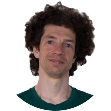
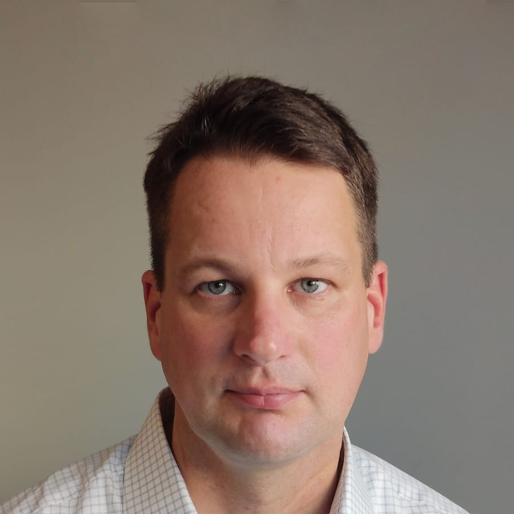

<section class="team" id="team">
  <div class="container">
    <div class="wrapper">     
      <div class="col-12">
        <div class="">
          <h1 class="text-uppercase mb-5">OUR LEADERSHIP TEAM</h1>
        </div>
      </div>

      <div class="col-12 team_cards">
        <div class="team_card">
          
          <div class="animate__animated animate__lightSpeedInRight animate__delay-1s team_text">
            <div class="team_link">
              <p>Dr Anton Lokhmotov</p>
              <a href="https://www.linkedin.com/in/lokhmotov/"></a>
            </div>
            <p>Founder & CEO</p>
            <p class="team_visible">PhD in Computer Science. 20+ years of advanced R&D in performance optimization...</p>
            <p class="team_hidden">8+ years in business leadership. 
              Dr Lokhmotov helped create the world’s first full-profile GPU acceleration implementation for mobile and embedded devices at Arm.
            </p>
          </div>
        </div>

        <div class="team_card">
          
          <div class="animate__animated animate__lightSpeedInRight animate__delay-1s team_text">
            <div class="team_link">
              <p>Dr Leo Gordon</p>
              <a href="https://www.linkedin.com/in/leo-gordon-cambridge/"></a>
            </div> 
            <p>Chief Architect</p>
            <p class="team_visible">PhD in Computer Science and Bioinformatics...</p>
            <p class="team_hidden">20+ years of workflow automation experience for genome sequencing and benchmarking/optimization. 
              Dr Gordon Led the development of a platform for massive computation on genome data at the European Bioinformatics Institute.
            </p>
          </div>
        </div>

        <div class="team_card">
          
          <div class="animate__animated animate__lightSpeedInRight animate__delay-1s team_text">
            <div class="team_link">
              <p>Gavin Simpson</p>
              <a href="https://www.linkedin.com/in/gavinssimpson/"></a>
            </div>
            <p>Principal R&D Engineer</p>
            <p class="team_visible">25+ years in industry. 12+ years in engineering and management roles at Arm...</p>
            <p class="team_hidden">Deep engagement with AI hardware companies. 
              Gavin also managed the development of GPU Compute runtimes for Edge and Android over 12+ years.
            </p>
          </div>
        </div>

        <div class="team_card">
          
          <div class="animate__animated animate__lightSpeedInRight animate__delay-1s team_text">
            <div class="team_link">
              <p>Natalie Durzynski</p>
              <a href="https://www.linkedin.com/in/nataliedurzynski"></a>
            </div>
            <p>Director, Business Dev.</p>
            <p class="team_visible">10+ years in driving growth and revenue for AI SaaS startups...</p>
            <p class="team_hidden">Deep expertise in consultative sales, building out end-to-end sales processes and international enterprise client acquisition. 
              Natalie is passionate about AI innovation and has completed an MA in Management of AI.
            </p>
          </div>
        </div>

        <div class="team_card">
          
          <div class="animate__animated animate__lightSpeedInRight animate__delay-1s team_text">
            <div class="team_link">
              <p>Bruno Jansen</p>
              <a href="https://www.linkedin.com/in/bruno-jansen-uk/"></a>
            </div>
            <p>Director, Operations</p>
            <p class="team_visible">12+ years in management of corporate operations at Arm...</p>
            <p class="team_hidden">direct operational and strategic support to Arm Execs (CTO, CMO) in rapid business expansion. 
              Accomplished Director of Operations with extensive expertise in operations, finance, recruitment, and team building.
            </p>
          </div>
        </div>
      </div>
    </div>
  </div>
</section>